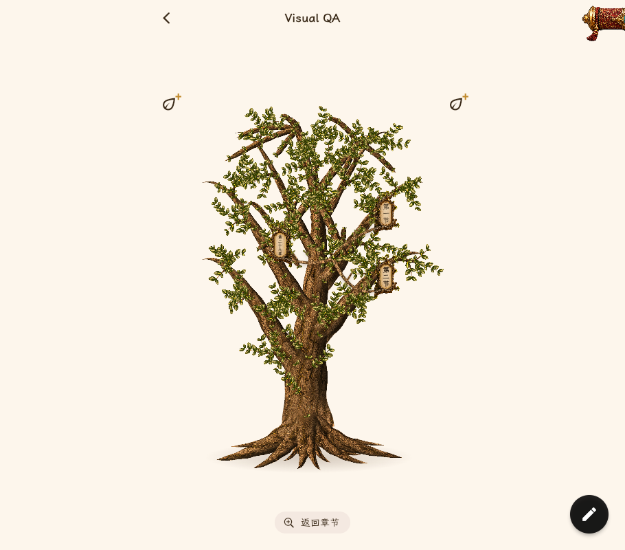
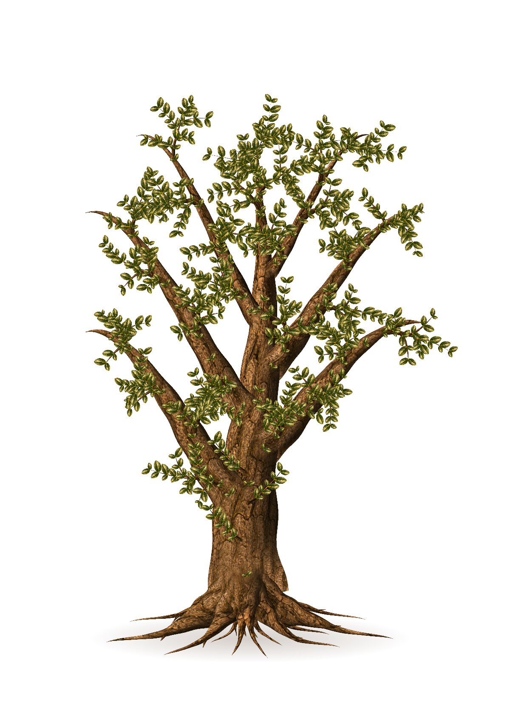
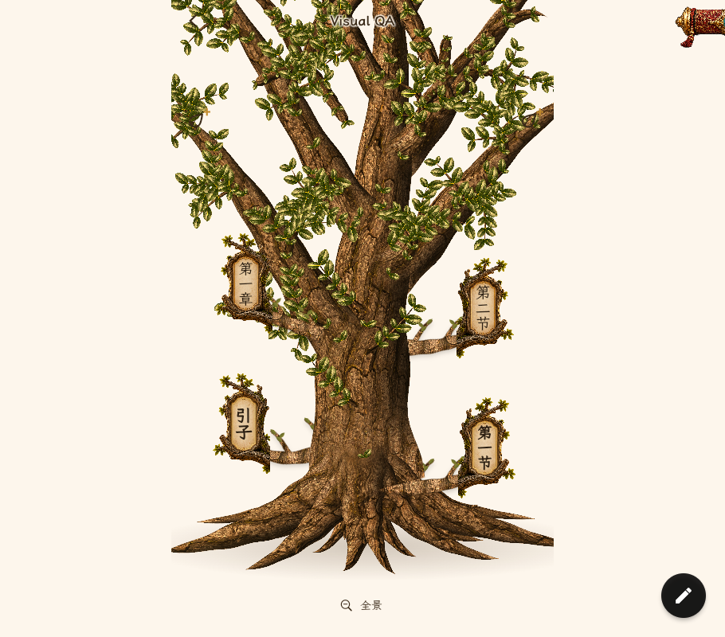
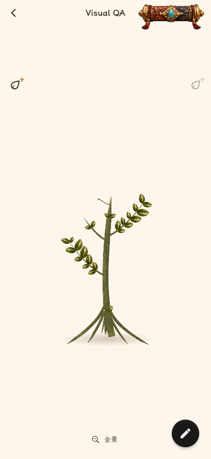

魔树整改 · 冻结基线
2026-11-01。正式源码 f56021e。本页用于识别差距，不是整改后的效果展示。正式截图来自无实验开关的实际浏览器；候选未发布。
需要重审整树的造型、叶簇、材质、根颈和枝牌关系。不能把测试通过或局部改善当作整体完成。
批准参考 · 成熟树看承托主枝、叶簇层级、根颈体积和统一光照。 正式版 · 30章宽屏全景骨架较裸，细节碎亮；全景可用不等于达到参考质感。
正式版 · 30章宽屏全景骨架较裸，细节碎亮；全景可用不等于达到参考质感。
未发布候选 · 十章原生样图只试改根部。不是30章页面，不作同规模对比，也不是整树新方案。
批准参考 · 承托枝与近景枝根有体积，树皮、叶簇和木牌属于同一视觉语言。 正式版 · 根部历史近景实际命中已验证；仍存在根盘尖片和材质噪声，功能结论不能替代视觉结论。
正式版 · 根部历史近景实际命中已验证；仍存在根盘尖片和材质噪声，功能结论不能替代视觉结论。
批准参考 · 成长关系用于判断干、枝、叶、根是否协调长大；不允许按这张分镜切换阶段整树图片。
正式版 · 空书完整树苗保留用户已确认的完整树苗方向；下一轮需与成熟样件统一造型、材质和光向。
唯一验收表与下一步样件出口 · 基线与候选身份、图片SHA256